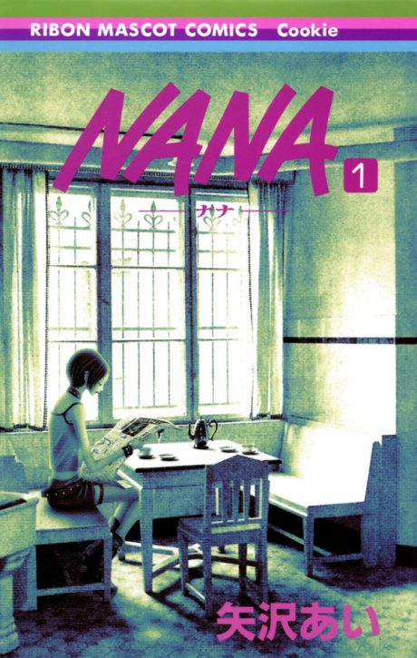

Animeter
 Anime
Anime
Manga2006 · Drama, Music, Romance
NANA
NANA-ナナ-
AniList8.5
Animeter—
Episodes47 ep
MangaCh. 43
Arcs
Episodes numbered 1-47 in broadcast order as on Wikipedia, ignoring the half-numbered 'Junko's Room' recaps (11.5, 21.5, 36.5).
Story arcFiller arc47 episodes
1
NANA (2006-2007)
Two Nanas
Two 20-year-old women named Nana meet by chance on a train to Tokyo, then the story steps back to show their lives before.
Ep 1–5
2
NANA (2006-2007)
Room 707
The two Nanas end up sharing an apartment in Tokyo as Nana O. rebuilds her band.
Ep 6–16
3
NANA (2006-2007)
Trapnest
Nana K.'s love of the band Trapnest pulls both Nanas into its members' lives.
Ep 17–30
4
NANA (2006-2007)
Hachi's Choice
An unexpected pregnancy changes Nana K.'s life and her friendship with Nana O.
Ep 31–36
5
NANA (2006-2007)
Blast's Debut
While Nana K. becomes a housewife, Blast finally makes it to a major label.
Ep 37–45
6
NANA (2006-2007)
Fireworks
The series closes by looking ahead to a future where the friends have drifted apart.
Ep 46–47
Sources: Wikipedia